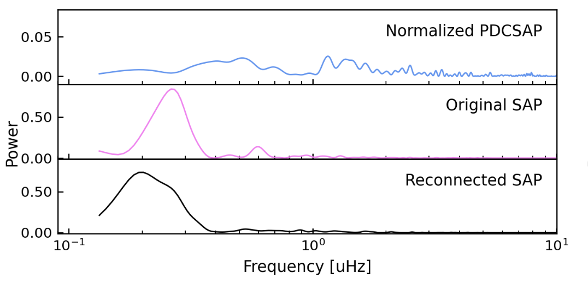

Welcome TESS followers to our latest news bulletin! This week, we are looking at three recent papers from the archive. Enjoy!
Taranga DR1: Analysis of TESS Short Cadence data for years 1 and 2 (Nandakumar et al., 2022) :
As part of its 2-year primary mission, TESS provided 2-min cadence photometry of more than 200,000 stars spread across the entire sky -- a rich dataset enabling a multitude of detailed studies of stars and exoplanets. This paper presents Taranga, a new pipeline designed for the analysis of short-cadence TESS data. Nandakumar et al., (2022) applied the pipeline to 232,122 stars to create merged multi-sector light curves and Lomb-Scargle periodograms for all short-cadence targets, and calculate the statistical and temporal properties of the dataset. The authors argue that the merging algorithm used in the pipeline is best-suited for either AGB stars, or for stars with long rotational periods. Nandakumar et al., (2022) note that the results from their work can also be used for the planning and preparation of upcoming missions such as PLATO and the Roman Space Telescope.
Superhumps in the cataclysmic variable BG Tri (Stefanov et al., 2022) :
BG Triangulum is a relatively bright (V = 11.9 mag) cataclysmic variable discovered and identified in 2008. It is classified as a VY Scl subclass, has the spectroscopic characteristics of a RW Sex variable, shows significant UV excess, and exhibited a 2.5 V magnitude decrease in brightness in 2018. This paper presents the observations and detailed analysis of the system using ground and space-based photometry. Stefanov et al., (2022) use data from ASAS-SN, NSVS, the Rozhen Observatory, TESS, and WASP to detect a positive superhump with a period of 0.1727 days in 2006 data, a negative superhump with a period of 0.1515 days in 2019-2021 data, and a super-orbital variability with a period of 3.94 days and amplitude of 0.05 mag. The authors estimate the disk tilt to be about 3 degrees and note that the most common quasi-periods are in the 5-25 min range. Stefanov et al., (2022) argue that future observations will provide better understanding of the detected superhump.
TOI-4562 b: A highly eccentric temperate Jupiter analog orbiting a young field star (Heitzmann et al., 2022) :
Giant planets in distant orbits around young stars provide valuable insight into the processes driving planet formation and evolution. Of particular interest are those with measured mass and high eccentricity. This paper presents the discovery of TOI-4562 b, a temperate Jovian planet in orbit around a ~300 Myr old F7V star. Heitzmann et al., (2022) use data from CHIRON, FEROS, Gemini-South, the Las Cumbres Observatory, SOAR and TESS to confirm the planet, measure a period of 225 days, radius of 1.07 RJup, mass of 3.29 MJup, and orbital eccentricity of 0.81. TOI-4562 b, located near the southern continuous viewing zone of TESS, allowed observations throughout 25 sectors, enabling an unambiguous period of measurement and at the time of writing, is the second longest period planet discovered from TESS data. The authors point out that a high-eccentric migration is an unlikely formation scenario, although they note that the planet may be currently undergoing eccentricity cycles. Heitzmann et al., (2022) suggest that another possibility might be either in-situ formation or smooth disk migration followed by dynamical interaction with a companion. The authors tentatively detect transit-timing variations on the order of 5-20 min, suggesting potential perturbations from a companion, and argue that future observations will help constrain its properties.

Fig. 1: Taken from Nandakumar et. al., (2022). Lomb-Scargle periodograms for TIC 255565783 using the normalized PDCSAP data (upper panel), SAP data (middle panel) and the SAP data processed by the Taranga pipeline(lower panel). The measured peridogram peaks are 0.3 microHz and 0.2 microHz for the SAP and Taranga-processed SAP, respectively. The latter is closer to the true rotation period of 93.4 days.
Fig. 2: Taken from Stefanov al. (2022)., Upper panels: TESS lightcurve (left) and corresponding Lomb-Scargle periodogram (right) of BG Tri. Lower panels: Corresponding phase-folded data with a period of P = 0.152 (left) and P = 3.94 days (right).

Fig. 3: Taken from Heitzmann et al., (2022). Upper: Four transits of TOI-4562 b observed by TESS along with the best-fit model (red). Lower left panel: Corresponding phase-folded light curve and best-fit model. Lower right panel: Follow-up observations from LCGOT.